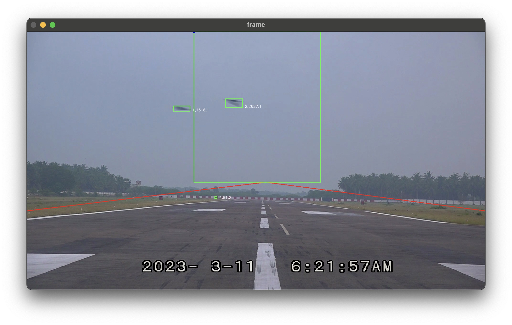
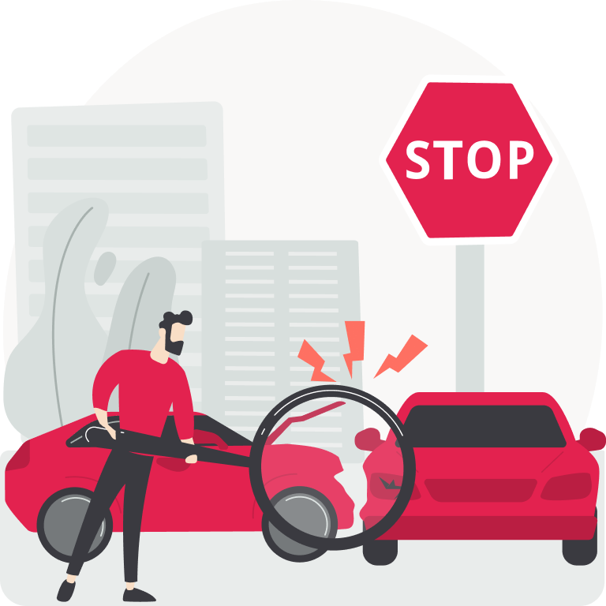
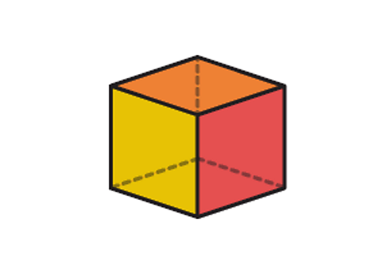

|
Yogesh Thangamuthu I am fascinated by computer vision and its transformative impact on both technology and society. I received my undergrads from anna university and Master degree from Aston university in 2021 and 2023 respectively, fortunately supervised by Prof. Philip Trevelyan. My current research focuses on vision foundation model and vision-language model. Previously, I worked on learning from cheap visual data. |

|
Topic's exploredI'm interested in computer vision, deep learning, generative AI, and image processing. Most of my research is about inferring the physical world (shape, motion, color, light, etc) from images, usually with radiance fields. Some experiences are highlighted. |

|
ANPR Model: Tracking, OCR, Identification
Yogesh Thangamuthu project page / blog This application harnesses the power of convolutional neural networks (CNNs) to enable real-time tracking and optical character recognition (OCR) of vehicles, leveraging state-of-the-art deep learning techniques for precise vehicle type classification and license plate extraction. The core functionality is powered by PyQt6, which supports sophisticated video analysis, object detection, and model identification workflows. The system further enhances its tracking capabilities through the integration of predictive tracking algorithms that anticipate vehicle movements, improving the accuracy and reliability of the monitoring process. It operates as a web-based platform, engineered using Flask to facilitate user interaction and data handling, with Kafka serving as a high-throughput, fault-tolerant data streaming service to manage the flow of real-time information. Redis is strategically implemented to act as an in-memory data structure store, optimizing the retrieval and management of vehicle data lists, thus reducing latency and increasing the efficiency of data operations. The architecture of the application is meticulously designed to minimize computational load through the use of optimized deep learning models and efficient coding techniques, making it highly suitable for deployment in scenarios where both cost and performance are critical, such as traffic and parking management systems and security infrastructure. |
|

|
Deep Learning-Based Bird Detection for Airport Runways
Yogesh Thangamuthu Indian navy / blog
Utilizing IP cameras and deep learning for bird movement analysis, featuring PyQt security and on-premise dashboard analytics. |
Learning in Action
Depth Analysing
Inspired from DepthAnything
Machine learning enhances object detection with depth images by extracting relevant 3D features, reducing false positives, and filtering noise. It enables robust, light-independent detection by training on large datasets and fusing RGB and depth data for improved accuracy in complex environments .Image is generted using depth anything v-2.

Impact assessment
Leveraging deep learning algorithms on images and video for vehicle damage assessment automates the detection, segmentation, and quantification of damage. This approach enhances accuracy, speed, and scalability, while integrating cost estimation and claims detection models to streamline the automotive insurance industry with precise, efficient, and cost-effective claims evaluation. 
3D Rendering
Passionate about exploring the intersection of Neural Radiance Fields (NeRF) and 3D rendering. Committed to mastering advanced visualization techniques to push the boundaries of virtual and augmented reality. 